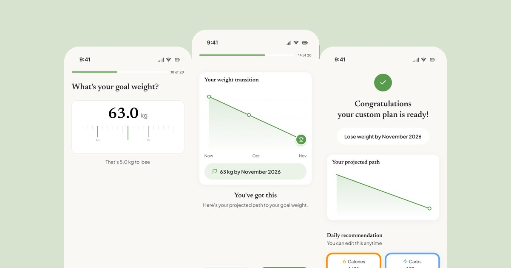
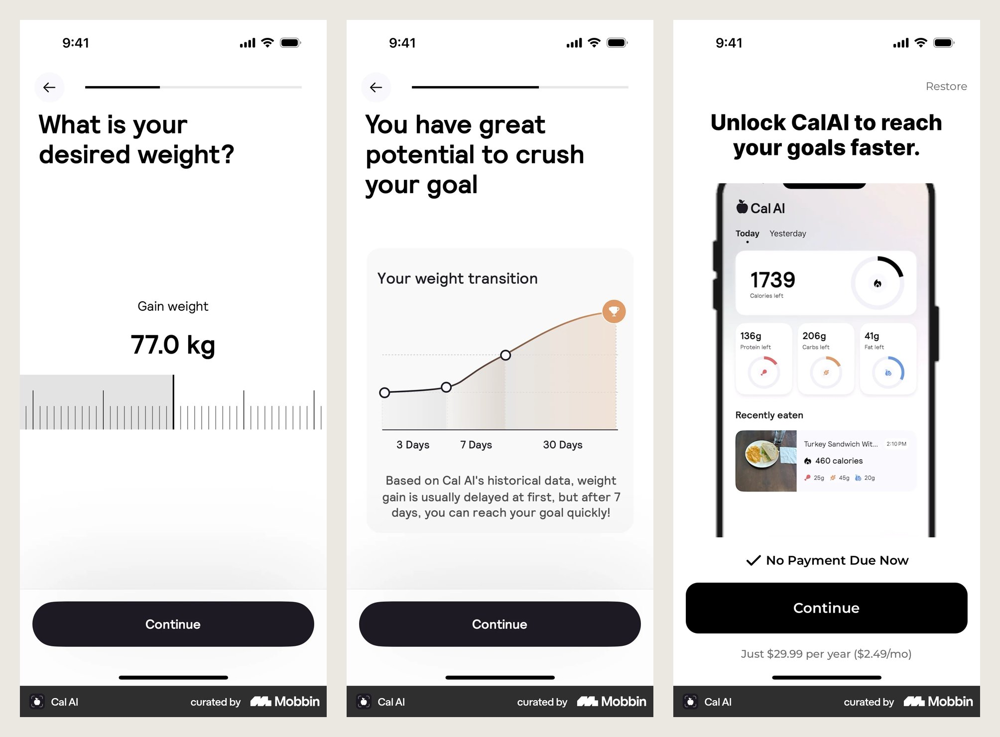
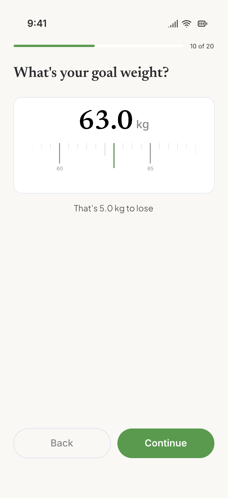
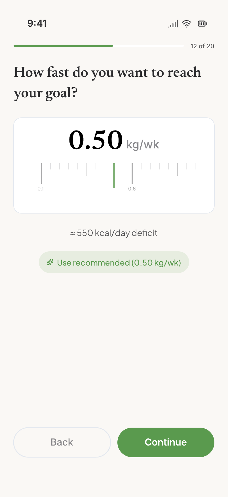
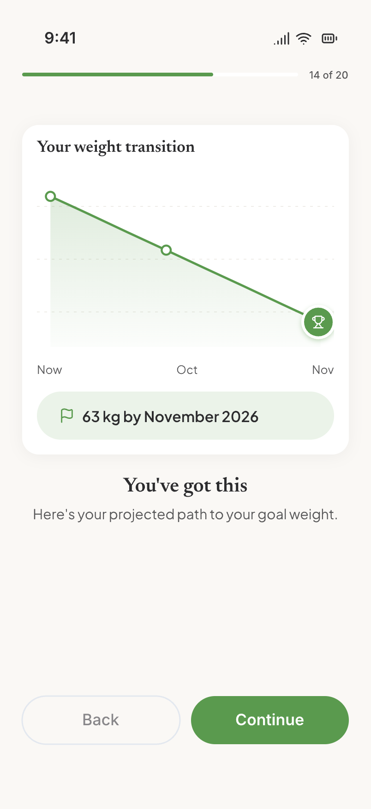
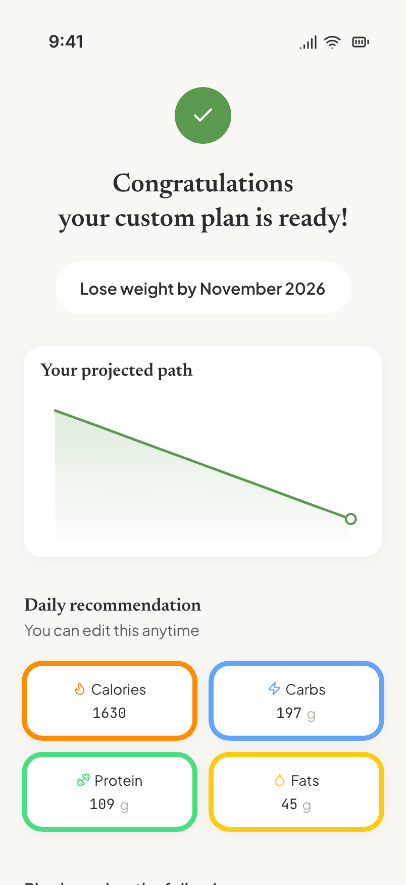
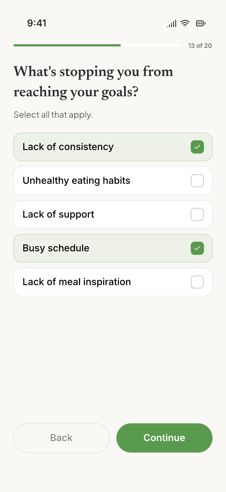
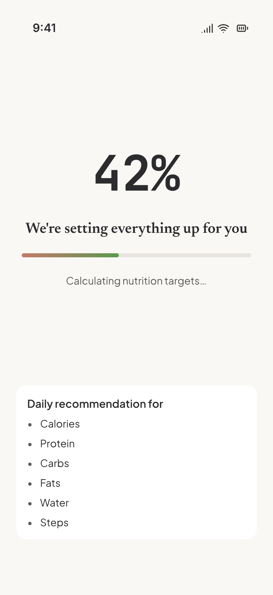
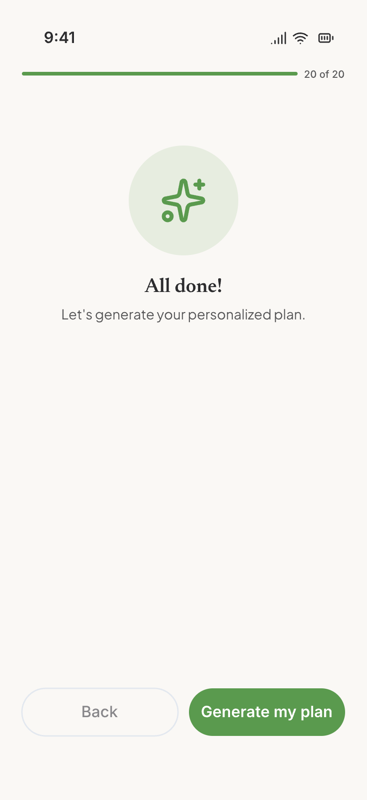
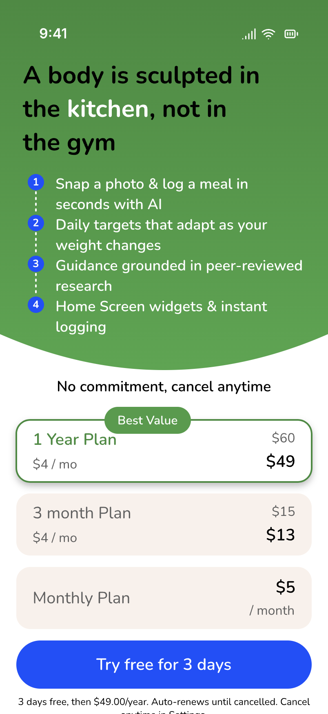

Why onboarding is important in D2C apps.
Café Cal is an AI calorie tracker I founded and design. Its first onboarding was the cleanest of any app in its category. It was also the only one that converted nobody, because there was nothing to convert to. This is how I found that out, what I borrowed, what I refused to borrow, and what shipped.

We had built a first-run that respected people and asked nothing of them.
New users answered eight clean questions, watched a five-second "calculating" moment, and received a nutrition plan backed by peer-reviewed citations. Then the flow ended. No goal weight, no projection, no permission asks, no account save, no paywall. The plan was credible and nobody was committed to it. Three months after launch, Café Cal had zero revenue because the product had never once asked for any.
I want to be precise about what was wrong, because the flow was not bad. Basics, body measurements, activity, primary goal, a target date, diet, "have you tried other apps," "where did you hear about us." Haptic ruler pickers. An editable plan. A safety cap on aggressive calorie targets. Nobody complained about it, which is exactly why it took me three months to see it as a problem.
The moment it became one was July 2026. We had decided to charge, and the paywall had to live somewhere. Putting it at the end of a flow that built no commitment would have been asking strangers for money.
The research said our onboarding was too short. The teardown showed me why.
Two sources, one week. First, the subscription-app data. RevenueCat's benchmarks across 115,000 apps put about half of all paid conversions on day zero, in the first session, and show hard or trial-inclusive paywalls converting around five times better than freemium.1 Their onboarding writing makes the counterintuitive point directly: most onboarding is too short, because value and projection screens build momentum rather than friction.2 Noom runs over a hundred screens and converts through progressive commitment.
Second, I captured the complete first-run of Cal AI, MacroFactor, and MyFitnessPal, screen by screen, and laid ours next to them. Cal AI's 34 screens are engineered for one moment: a soft paywall at the peak of commitment, after your name is on a plan with a goal date.3 MacroFactor pre-justifies its price with an honest "here's our business model" screen. MyFitnessPal extracts data and dead-ends at "create account."

From the teardown. Cal AI's goal weight, projection, and paywall. Captured July 2026. The structure was worth studying. The tone was not worth copying.
The one-line verdict I wrote at the top of the teardown: ours is the most polished and honest of the four, and the most commercially naive. We had the credibility edge, peer-reviewed sources on the plan reveal that none of the slick apps could match. What we lacked was structure: the mechanics that turn minutes of answering questions into a commitment.
Keep the spine. Borrow the mechanics. Leave the tricks.
Eight questions became twenty steps. It got longer, and it got faster to commit to.
- Tell us about yourself (name, sex, date of birth)
- Body measurements
- How active are you?
- Primary goal
- When do you want to reach it?
- Diet and restrictions
- Tried other apps?
- Where did you hear about us?
- Calculating, then plan reveal, then "Let's get started"
- Welcome
- Name (only if sign-in gave us none)
- Gender
- Activity
- Where did you hear about us?
- Tried other apps?
- Why this works (value)
- Body metrics
- Date of birth
- Primary goal
- Goal weight
- Reassurance ("5 kg is very achievable")
- Pace, recommended by default
- What's stopping you? (multi-select)
- Projection
- Diet
- Allergies
- Trust (how we handle your data)
- Apple Health, skippable
- Notifications, skippable
- Calculating, plan reveal with projection, then the paywall with a 3-day trial




The four screens that did not exist in v1. Goal weight, pace, projection, and the plan reveal that now carries the projection above the macros.




The barrier question, the calculating moment we kept, the hand-off, and the paywall that now has somewhere to stand.
It shipped, it charged, and the audit a month later showed me the parts I had rushed.
v2 went live on July 6 with the first paywall. Café Cal has had paying subscribers since. That is the outcome the problem statement asked for, and I am not going to dress it up with a conversion percentage from a base of a few hundred installs.
What I will report is what the August 10 audit found in this exact flow, because it is the honest second half of the story. The paywall had no back, skip, or close, and quitting at it destroyed all twenty answers. The projection rendered an empty card for four of the six goals. The money screen had the old brand name on it. All three were fixed within days. The barrier question became multi-select on August 22 after watching people pick one reason when they clearly had three.
Honesty was never the problem. Honesty without structure was.
Length is not friction if every screen gives something back. I had been proud of eight questions. The research and the teardown both said the same thing: people will answer twenty if the output is visibly theirs, and the projection they see at step fifteen is what makes them believe the plan at step twenty-one.
Build the paywall's exit before its entrance. I designed the moment to ask for money and forgot to design the moment someone says no. The audit caught it. Next time it is in the first sketch.
References
- RevenueCat, State of Subscription Apps 2026. About 50% of paid conversions on day 0; hard paywall trial-to-paid 10.7% vs 2.1% freemium.
- RevenueCat, Why your onboarding experience might be too short, and Inside Noom's onboarding funnel.
- Primary teardown of Cal AI, MacroFactor, and MyFitnessPal iOS onboarding, July 2026. Cal AI structure also documented at tasu.ai, Cal AI Teardown.